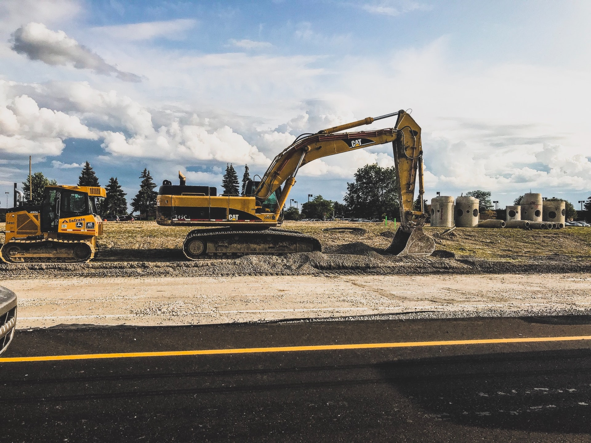

Újra elkezdődöt az épitkezés
Csarnok épitkezés, 2020. Július 13.
|  | Újra belekezdtünk az építkezésbe. A márciusi leállásunk után végre négy hónap elteltével újra neki tudtunk kezdeni a Veszprém melleti csarnok építésébe. Nyár elején meg kaptuk az engedéjt és a lehető leggyorsabban neki is álltunk. A gépeinket nyár elején újra üzembe helyeztük meg mozgattuk őket és a fontososabb javításokat elvgeztük rajtuk. Az ott hagyott csarnoknak most már az összes tartó oszlopa áll és meg kapta gerendáit is. |
Ideiglenes leállás
Csarnok épitkezés, 2020. Március 21.
Mint mindannyian tudják a kormány elrendelte a munkák ideiglenes le állását a korona vírus miatt. Home officeból nem tudunk építkezni így mi is szüneteltetjük munkálatainkat. A Veszprém melleti csarnokot elkezdtük építeni az oszlopok helyeit már ki ástuk és egy-két helyen már fel is állítottuk az oszlopokat. Miután a kormány renelete érvénybe lépet a munka gépeinket vissza szálítottuk a raktár helyíségünkbe szükséges karbantartásokat elvégezzük rajta és utána konzerváljuk őket beláthatatlan ideig. |